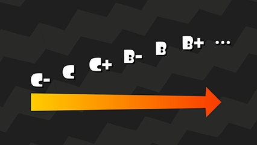
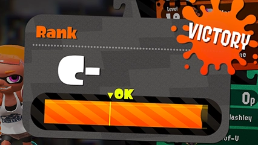
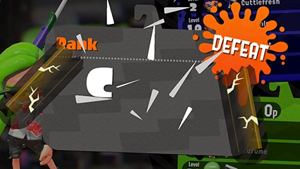
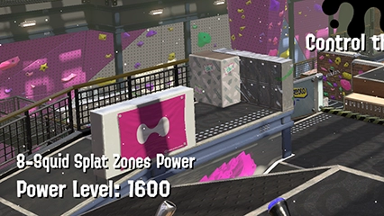

Matchs pro

Les matchs pro sont destinés aux inklings qui ne se satisfont pas des simples guerres de territoire proposées par les matchs classiques.
En match pro, seule la victoire compte.
Laisse tes adversaires de côté pour atteindre le plus haut rang!
En match pro, seule la victoire compte.
Laisse tes adversaires de côté pour atteindre le plus haut rang!
Rang


En match pro, tu obtiens un rang distinct pour chaque mode de jeu. Lorsque tu gagnes un match dans un mode donné, ta jauge de rang pour ce mode se remplit. Une fois pleine, tu passes au rang suivant.
Chaque défaite fissure ta jauge de rang. Si tu en subis trop, elle finit par se briser. Si cela arrive alors que plus de la moitié de la jauge est remplie, tu conserves ton rang actuel. Dans le cas contraire, tu descends au rang inférieur.
Chaque défaite fissure ta jauge de rang. Si tu en subis trop, elle finit par se briser. Si cela arrive alors que plus de la moitié de la jauge est remplie, tu conserves ton rang actuel. Dans le cas contraire, tu descends au rang inférieur.
Cote

Une fois que tu as accumulé une certaine quantité d'expérience, la cote des huit joueurs de la session s'affiche à l'écran au début des matchs. Cette valeur rend compte des capacités des joueurs plus précisément que ne le fait leur rang.
À rangs identiques, un match réunissant des joueurs dont la cote est élevée sera théoriquement plus intense qu'un match disputé par des joueurs dont la cote est basse. Vaincre une équipe dont la cote est élevée remplit grandement ta jauge de rang.
À rangs identiques, un match réunissant des joueurs dont la cote est élevée sera théoriquement plus intense qu'un match disputé par des joueurs dont la cote est basse. Vaincre une équipe dont la cote est élevée remplit grandement ta jauge de rang.
Sauter des rangs
Si tes prouesses lors d'un match s'avèrent particulièrement impressionnantes et si tu remplis ta jauge de rang, il se peut que tu progresses de plusieurs rangs d'un seul coup!